pacman::p_load(tidyverse, tsibble, feasts, fable, seasonal)In-Class Exercise 7 (Time Series Data Sampling)
1. Getting Started
lubridate provides a collection to functions to parse and wrangle time and date data.
tsibble, feasts, fable and fable.prophet are belong to tidyverts, a family of tidy tools for time series data handling, analysis and forecasting.
tsibble provides a data infrastructure for tidy temporal data with wrangling tools. Adapting the tidy data principles, tsibble is a data- and model-oriented object.
feasts provides a collection of tools for the analysis of time series data. The package name is an acronym comprising of its key features: Feature Extraction And Statistics for Time Series.
2. Data
2.1. Loading data
First, read_csv() of readr package is used to import visitor_arrivals_by_air.csv file into R environment. The imported file is saved an tibble object called ts_data.
ts_data <- read_csv(
"visitor_arrivals_by_air.csv")2.2. Converting CHR to DATE
In the code chunk below, dmy() of lubridate package is used to convert data type of Month-Year field from Character to Date.
ts_data$`Month-Year` <- dmy(
ts_data$`Month-Year`)ts_data_ts <- ts(ts_data)
head(ts_data_ts) Month-Year Republic of South Africa Canada USA Bangladesh Brunei China
[1,] 13879 3680 6972 31155 6786 3729 79599
[2,] 13910 1662 6056 27738 6314 3070 82074
[3,] 13939 3394 6220 31349 7502 4805 72546
[4,] 13970 3337 4764 26376 7333 3096 76112
[5,] 14000 2089 4460 26788 7988 3586 64808
[6,] 14031 2515 3888 29725 8301 5284 55238
Hong Kong SAR (China) India Indonesia Japan South Korea Kuwait Malaysia
[1,] 17103 41639 62683 37673 27937 284 31352
[2,] 21089 37170 47834 35297 22633 241 35030
[3,] 23230 44815 64688 42575 22876 206 37629
[4,] 17688 49527 58074 26839 20634 193 37521
[5,] 19340 67754 57089 30814 22785 140 38044
[6,] 19152 57380 70118 31001 22575 354 40419
Myanmar Pakistan Philippines Saudi Arabia Sri Lanka Taiwan Thailand
[1,] 5269 1395 18622 406 5289 13757 18370
[2,] 4643 1027 21609 591 4767 13921 16400
[3,] 6218 1635 28464 626 4988 11181 23387
[4,] 7324 1232 30131 644 7639 11665 24469
[5,] 5395 1306 30193 470 5125 11436 21935
[6,] 5542 1996 25800 772 4791 10689 19900
United Arab Emirates Vietnam Belgium & Luxembourg Finland France Germany
[1,] 2652 10315 1341 1179 6918 11982
[2,] 2230 13415 1449 1207 7876 13256
[3,] 3353 14320 1674 1071 8066 15185
[4,] 3245 15413 1426 768 8312 11604
[5,] 2856 14424 1243 690 7066 9853
[6,] 4292 21368 1255 624 5926 9347
Italy Netherlands Spain Switzerland United Kingdom Australia New Zealand
[1,] 2953 4938 1668 4450 41934 71260 7806
[2,] 2704 4885 1568 4381 44029 45595 4729
[3,] 2822 5015 2254 5015 49489 53191 6106
[4,] 3018 4902 1503 5434 35771 56514 7560
[5,] 2165 4397 1365 4427 24464 57808 9090
[6,] 2022 4166 1446 3359 22473 63350 9681class(ts_data)[1] "spec_tbl_df" "tbl_df" "tbl" "data.frame" class(ts_data_ts)[1] "mts" "ts" "matrix" "array"
Note
ts_data (tibble object) is a tibble data frame so do all data preparation and manipulation while it is in this form before transforming it to a time series. ts_data_ts (time series object) is a time series data frame and will be seen as a table but it is actually no longer in a data frame.
2.3. Converting tibble object to tsibble object
Built on top of the tibble, a tsibble (or tbl_ts) is a data- and model-oriented object. Compared to the conventional time series objects in R, for example ts, zoo, and xts, the tsibble preserves time indices as the essential data column and makes heterogeneous data structures possible. Beyond the tibble-like representation, key comprised of single or multiple variables is introduced to uniquely identify observational units over time (index).
The code chunk below converting ts_data from tibble object into tsibble object by using as_tsibble() of tsibble R package.
ts_tsibble <- ts_data %>%
mutate(Month = yearmonth(`Month-Year`)) %>%
as_tsibble(index = `Month`)
Note
mutate() of dplyr package is used to derive a new field by transforming the data values in Month-Year field into month-year format.
The transformation is performed by using yearmonth() of tsibble package.
as_tsibble() is used to convert the tibble data frame into tsibble data frame.
ts_tsibble# A tsibble: 144 x 35 [1M]
`Month-Year` `Republic of South Africa` Canada USA Bangladesh Brunei China
<date> <dbl> <dbl> <dbl> <dbl> <dbl> <dbl>
1 2008-01-01 3680 6972 31155 6786 3729 79599
2 2008-02-01 1662 6056 27738 6314 3070 82074
3 2008-03-01 3394 6220 31349 7502 4805 72546
4 2008-04-01 3337 4764 26376 7333 3096 76112
5 2008-05-01 2089 4460 26788 7988 3586 64808
6 2008-06-01 2515 3888 29725 8301 5284 55238
7 2008-07-01 2919 5313 33183 9004 4070 80747
8 2008-08-01 2471 4519 27427 7913 4183 66625
9 2008-09-01 2492 3421 21588 7549 3160 52649
10 2008-10-01 3023 4756 25112 7527 2983 54423
# ℹ 134 more rows
# ℹ 28 more variables: `Hong Kong SAR (China)` <dbl>, India <dbl>,
# Indonesia <dbl>, Japan <dbl>, `South Korea` <dbl>, Kuwait <dbl>,
# Malaysia <dbl>, Myanmar <dbl>, Pakistan <dbl>, Philippines <dbl>,
# `Saudi Arabia` <dbl>, `Sri Lanka` <dbl>, Taiwan <dbl>, Thailand <dbl>,
# `United Arab Emirates` <dbl>, Vietnam <dbl>, `Belgium & Luxembourg` <dbl>,
# Finland <dbl>, France <dbl>, Germany <dbl>, Italy <dbl>, …3. Visualising Time-series Data
In order to visualise the time-series data effectively, we need to organise the data frame from wide to long format by using pivot_longer() of tidyr package as shown below.
ts_longer <- ts_data %>%
pivot_longer(cols = c(2:34),
names_to = "Country",
values_to = "Arrivals")3.1. Visualising a single time series (ggplot2)
ts_longer %>%
filter(Country == "Vietnam") %>%
ggplot(aes(x = `Month-Year`,
y = Arrivals))+
geom_line(size = 0.5)
Note
filter() of dplyr package is used to select records belong to Vietnam.
geom_line() of ggplot2 package is used to plot the time-series line graph.
3.2. Plotting multiple time series (ggplot2)
ggplot(data = ts_longer,
aes(x = `Month-Year`,
y = Arrivals,
color = Country))+
geom_line(size = 0.5) +
theme(legend.position = "bottom",
legend.box.spacing = unit(0.5, "cm"))
In order to provide effective comparison, facet_wrap() of ggplot2 package is used to create small multiple line graph also known as trellis plot.
ggplot(data = ts_longer,
aes(x = `Month-Year`,
y = Arrivals))+
geom_line(size = 0.5) +
facet_wrap(~ Country,
ncol = 3,
scales = "free_y") +
theme_bw()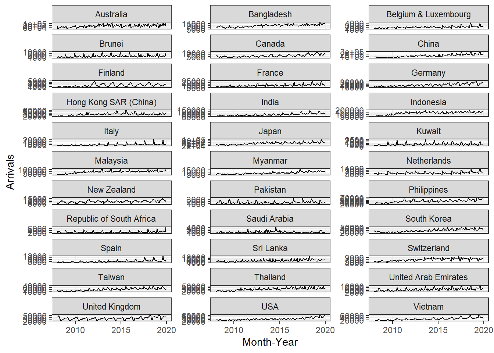
Note
Fixing ncol=3 will allow facet_wrap() to automatically choose its number of rows.
Using free_y allows each facet to adjust its y-axis range independently based on the data in that facet.
4. Visual Analysis of Time-series Data
Time series datasets can contain a seasonal component.
This is a cycle that repeats over time, such as monthly or yearly. This repeating cycle may obscure the signal that we wish to model when forecasting, and in turn may provide a strong signal to our predictive models.
In this section, you will discover how to identify seasonality in time series data by using functions provides by feasts packages.
In order to visualise the time-series data effectively, we need to organise the data frame from wide to long format by using pivot_longer() of tidyr package as shown below.
tsibble_longer <- ts_tsibble %>%
pivot_longer(cols = c(2:34),
names_to = "Country",
values_to = "Arrivals")4.1. Seasonal Plot
A seasonal plot is similar to a time plot except that the data are plotted against the individual seasons in which the data were observed.
A season plot is created by using gg_season() of feasts package.
tsibble_longer %>%
filter(Country == "Italy" |
Country == "Vietnam" |
Country == "United Kingdom" |
Country == "Germany") %>%
gg_season(Arrivals)
4.2. Cycle Plot
A cycle plot shows how a trend or cycle changes over time. We can use them to see seasonal patterns. Typically, a cycle plot shows a measure on the Y-axis and then shows a time period (such as months or seasons) along the X-axis. For each time period, there is a trend line across a number of years.
Figure below shows two time-series lines of visitor arrivals from Vietnam and Italy (countries of your choice). Both lines reveal clear sign of seasonal patterns but not the trend.
tsibble_longer %>%
filter(Country == "Vietnam" |
Country == "Italy") %>%
autoplot(Arrivals) +
facet_grid(Country ~ ., scales = "free_y")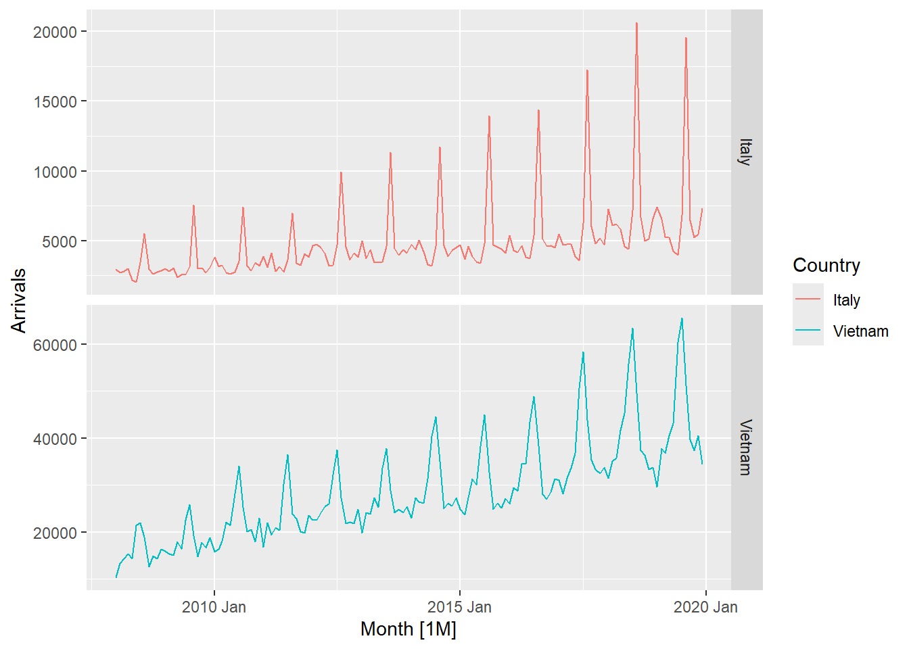
In the code chunk below, cycle plots using gg_subseries() of feasts package are created. Notice that the cycle plots show not only seasonal patterns but also trend.
tsibble_longer %>%
filter(Country == "Vietnam" |
Country == "Italy") %>%
gg_subseries(Arrivals) #ggsubseries() will plot cycle plot
5. Time series decomposition
Time series decomposition allows us to isolate structural components such as trend and seasonality from the time-series data.
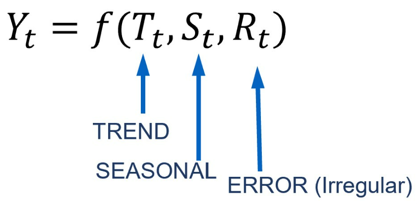
5.1. Single time series decomposition
In feasts package, time series decomposition is supported by ACF(), PACF(), CCF(), feat_acf(), and feat_pacf(). The output can then be plotted by using autoplot() of feasts package.
5.1.1. ACF plot
In the code chunk below, ACF() of feasts package is used to plot the ACF curve of visitor arrival from Vietnam.
tsibble_longer %>%
filter(`Country` == "Vietnam") %>%
ACF(Arrivals) %>%
autoplot()
5.1.2. PACF plot
In the code chunk below, PACF() of feasts package is used to plot the Partial ACF curve of visitor arrival from Vietnam.
tsibble_longer %>%
filter(`Country` == "Vietnam") %>%
PACF(Arrivals) %>%
autoplot()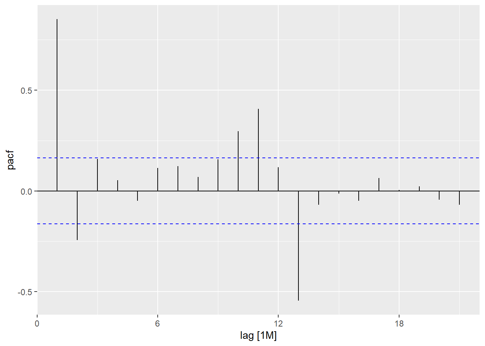
5.2. Multiple time series decomposition
5.2.1. ACF plot
Code chunk below is used to prepare a trellis plot of ACFs for visitor arrivals from Vietnam, Italy, United Kingdom and China.
tsibble_longer %>%
filter(`Country` == "Vietnam" |
`Country` == "Italy" |
`Country` == "United Kingdom" |
`Country` == "China") %>%
ACF(Arrivals) %>%
autoplot()
Both China and Vietnam have both seasonal and trend, as seen by the points all above the blue dotted line (above = statistically significant) and there is a trend of it decreasing and increasing. The difference between the two countries is only the time interval.
UK has seasonal (the 2 peaks are seen) but no trend.
5.2.2. PACF plot
On the other hand, code chunk below is used to prepare a trellis plot of PACFs for visitor arrivals from Vietnam, Italy, United Kingdom and China.
tsibble_longer %>%
filter(`Country` == "Vietnam" |
`Country` == "Italy" |
`Country` == "United Kingdom" |
`Country` == "China") %>%
PACF(Arrivals) %>%
autoplot()
UK and Vietnam has an inverse significant plot at lag=2 which means that 3rd month will experience a significant decrease, with UK having a more significant decrease than Vietnam.
5.3. Composite plot of time series decomposition
One of the interesting function of feasts package time series decomposition is gg_tsdisplay(). It provides a composite plot by showing the original line graph on the top pane follow by the ACF on the left and seasonal plot on the right.
tsibble_longer %>%
filter(`Country` == "Vietnam") %>%
gg_tsdisplay(Arrivals)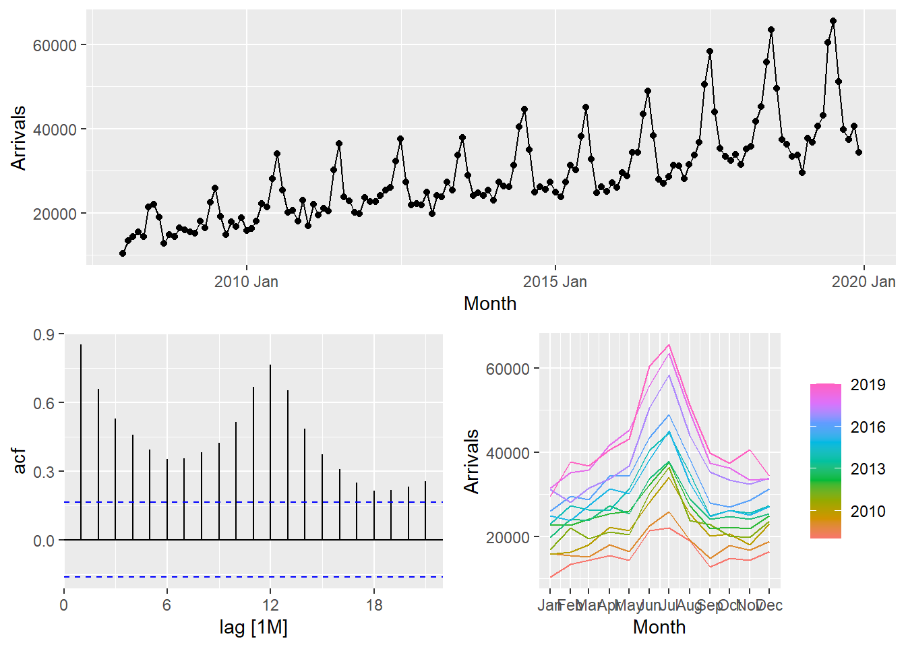
6. Visual STL diagnostics
STL is an acronym for “Seasonal and Trend decomposition using Loess”, where Loess is a method for estimating nonlinear relationships. It is a robust method of time series decomposition often used in economic and environmental analyses. The STL method uses locally fitted regression models to decompose a time series into trend, seasonal, and remainder components.
The STL algorithm performs smoothing on the time series using LOESS in two loops; the inner loop iterates between seasonal and trend smoothing and the outer loop minimizes the effect of outliers. During the inner loop, the seasonal component is calculated first and removed to calculate the trend component. The remainder is calculated by subtracting the seasonal and trend components from the time series.
STL has several advantages over the classical, SEATS and X11 decomposition methods:
Unlike SEATS and X11, STL will handle any type of seasonality, not only monthly and quarterly data.
The seasonal component is allowed to change over time, and the rate of change can be controlled by the user.
The smoothness of the trend-cycle can also be controlled by the user.
It can be robust to outliers (i.e., the user can specify a robust decomposition), so that occasional unusual observations will not affect the estimates of the trend-cycle and seasonal components. They will, however, affect the remainder component.
6.1. Visual STL diagnostics with feasts
In the code chunk below, STL() of feasts package is used to decomposite visitor arrivals from Vietnam data.
tsibble_longer %>%
filter(`Country` == "Vietnam") %>%
model(stl = STL(Arrivals)) %>%
components() %>%
autoplot()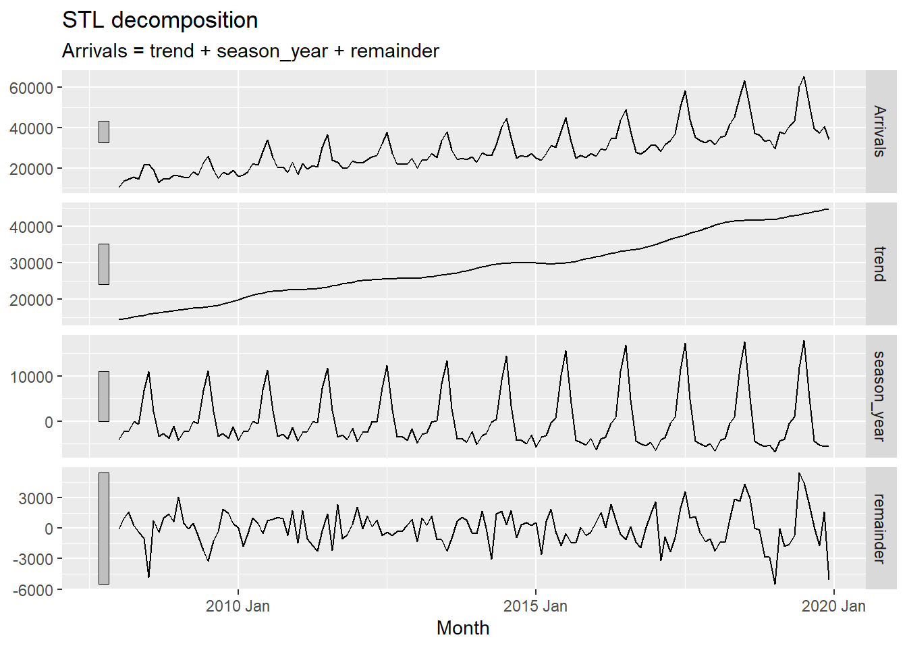
Note
It is good for arrivals, trend and season_year to have a pattern, but remainder should not have a pattern. Its lack of pattern would indicate that it is random, and is just white noise in the data when trend and seasonality is removed.
The grey bars to the left of each panel show the relative scales of the components. Each grey bar represents the same length but because the plots are on different scales, the bars vary in size. The large grey bar in the bottom panel shows that the variation in the remainder component is smallest compared to the variation in the data. If we shrank the bottom three panels until their bars became the same size as that in the data panel, then all the panels would be on the same scale.
6.2. Classical Decomposition with feasts
In the code chunk below, classical_decomposition() of feasts package is used to decompose a time series into seasonal, trend and irregular components using moving averages. The function is able to deal with both additive or multiplicative seasonal component.
tsibble_longer %>%
filter(`Country` == "Vietnam") %>%
model(
classical_decomposition(
Arrivals, type = "additive")) %>%
components() %>%
autoplot()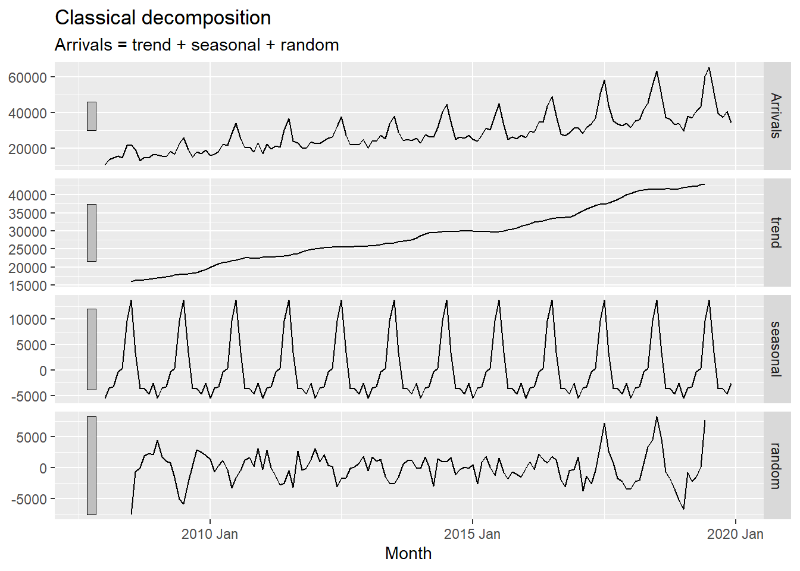
7. Visual Forecasting
In this section, two R packages belong to tidyverts family will be used they are:
fable provides a collection of commonly used univariate and multivariate time series forecasting models including exponential smoothing via state space models and automatic ARIMA modelling. It is a tidy version of the popular forecast package and a member of tidyverts.
fabletools provides tools for building modelling packages, with a focus on time series forecasting. This package allows package developers to extend fable with additional models, without needing to depend on the models supported by fable.
Figure below shows a typical flow of a time-series forecasting process.
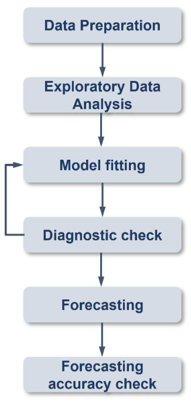
7.1. Time series data sampling
A good practice in forecasting is to split the original data set into a training and a hold-out data sets. The first part is called estimate sample (also known as training data). It will be used to estimate the starting values and the smoothing parameters. This sample typically contains 75-80 percent of the observation, although the forecaster may choose to use a smaller percentage for longer series.
The second part of the time series is called hold-out sample. It is used to check the forecasting performance. No matter how many parameters are estimated with the estimation sample, each method under consideration can be evaluated with the use of the “new” observation contained in the hold-out sample.
In this example we will use the last 12 months for hold-out and the rest for training.
First, an extra column called Type indicating training or hold-out will be created by using mutate() of dplyr package. It will be extremely useful for subsequent data visualisation.
Note
>=2019 = Hold-out, <2019-01-01 = Training.
vietnam_ts <- tsibble_longer %>%
filter(Country == "Vietnam") %>%
mutate(Type = if_else(
`Month-Year` >= "2019-01-01",
"Hold-out", "Training"))Extracting training data set using filter() of dplyr package.
vietnam_train <- vietnam_ts %>%
filter(`Month-Year` < "2019-01-01")7.2. EDA
As a good practice, should do EDA before fitting forecasting models.
vietnam_train %>%
model(stl = STL(Arrivals)) %>%
components() %>%
autoplot()
7.3. Fitting forecasting models
7.3.1. Exponential Smoothing State Space (ETS) - fable
ETS()
ETS(y ~ error(c("A", "M"))
+ trend(c("N", "A", "Ad"))
+ season(c("N", "A", "M"))
)<ETS model definition>7.3.2. Simple exponential smoothing (SES)
model()
fit_ses <- vietnam_train %>%
model(ETS(Arrivals ~ error("A")
+ trend("N")
+ season("N")))
fit_ses# A mable: 1 x 2
# Key: Country [1]
Country `ETS(Arrivals ~ error("A") + trend("N") + season("N"))`
<chr> <model>
1 Vietnam <ETS(A,N,N)>
Note
AIC, AICc, BIC all the same, choose the smallest for best model.
Residual (difference between estimated and forecasted) should follow normal distribution.
Don’t have to show all the data, beginning is just a fitting model. Can zoom into last 2 years + forecasted part.
Notice that model() of fable package is used to estimate the ETS model on a particular dataset, and returns a mable (model table) object.
A mable contains a row for each time series (uniquely identified by the key variables), and a column for each model specification. A model is contained within the cells of each model column.
7.3.3. Examine model assumptions
Next, gg_tsresiduals() of feasts package is used to check the model assumptions with residuals plots.
gg_tsresiduals(fit_ses)
7.3.4. Model details
report() of tabletools is used to reveal model details.
fit_ses %>%
report()Series: Arrivals
Model: ETS(A,N,N)
Smoothing parameters:
alpha = 0.9998995
Initial states:
l[0]
10312.99
sigma^2: 27939164
AIC AICc BIC
2911.726 2911.913 2920.374 7.3.5. Fitting ETS methods with Trend: Holt’s Linear
7.3.5.1. Trend methods
vietnam_H <- vietnam_train %>%
model(`Holt's method` =
ETS(Arrivals ~ error("A") +
trend("A") +
season("N")))
vietnam_H %>% report()Series: Arrivals
Model: ETS(A,A,N)
Smoothing parameters:
alpha = 0.9998995
beta = 0.0001004625
Initial states:
l[0] b[0]
13673.29 525.8859
sigma^2: 28584805
AIC AICc BIC
2916.695 2917.171 2931.109 7.3.5.2. Damped Trend methods
vietnam_HAd <- vietnam_train %>%
model(`Holt's method` =
ETS(Arrivals ~ error("A") +
trend("Ad") +
season("N")))
vietnam_HAd %>% report()Series: Arrivals
Model: ETS(A,Ad,N)
Smoothing parameters:
alpha = 0.9998999
beta = 0.0001098602
phi = 0.9784562
Initial states:
l[0] b[0]
13257.28 523.54
sigma^2: 28641536
AIC AICc BIC
2917.921 2918.593 2935.218 7.3.6. Checking for results
Check model assumptions with residual plots.
gg_tsresiduals(vietnam_H)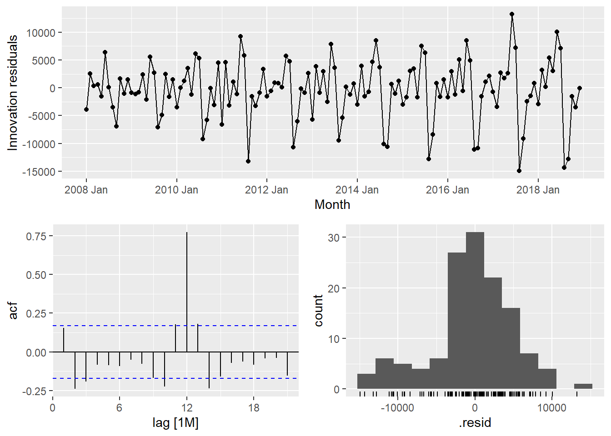
gg_tsresiduals(vietnam_HAd)
7.4. Fitting ETS methods with Season: Holt-Winters
Vietnam_WH <- vietnam_train %>%
model(
Additive = ETS(Arrivals ~ error("A")
+ trend("A")
+ season("A")),
Multiplicative = ETS(Arrivals ~ error("M")
+ trend("A")
+ season("M"))
)
Vietnam_WH %>% report()# A tibble: 2 × 10
Country .model sigma2 log_lik AIC AICc BIC MSE AMSE MAE
<chr> <chr> <dbl> <dbl> <dbl> <dbl> <dbl> <dbl> <dbl> <dbl>
1 Vietnam Additive 5.33e+6 -1336. 2706. 2711. 2755. 4.68e6 8.56e6 1.72e+3
2 Vietnam Multiplicative 4.55e-3 -1300. 2635. 2640. 2684. 3.05e6 3.42e6 5.20e-27.5. Fitting multiple ETS Models
fit_ETS <- vietnam_train %>%
model(`SES` = ETS(Arrivals ~ error("A") +
trend("N") +
season("N")),
`Holt`= ETS(Arrivals ~ error("A") +
trend("A") +
season("N")),
`damped Holt` =
ETS(Arrivals ~ error("A") +
trend("Ad") +
season("N")),
`WH_A` = ETS(
Arrivals ~ error("A") +
trend("A") +
season("A")),
`WH_M` = ETS(Arrivals ~ error("M")
+ trend("A")
+ season("M"))
)7.6. Model coefficient
tidy() of fabletools is used to extract model coefficients from a mable.
fit_ETS %>%
tidy()# A tibble: 45 × 4
Country .model term estimate
<chr> <chr> <chr> <dbl>
1 Vietnam SES alpha 1.00
2 Vietnam SES l[0] 10313.
3 Vietnam Holt alpha 1.00
4 Vietnam Holt beta 0.000100
5 Vietnam Holt l[0] 13673.
6 Vietnam Holt b[0] 526.
7 Vietnam damped Holt alpha 1.00
8 Vietnam damped Holt beta 0.000110
9 Vietnam damped Holt phi 0.978
10 Vietnam damped Holt l[0] 13257.
# ℹ 35 more rows7.7. Model Comparision
glance() of fabletools
fit_ETS %>%
report()# A tibble: 5 × 10
Country .model sigma2 log_lik AIC AICc BIC MSE AMSE MAE
<chr> <chr> <dbl> <dbl> <dbl> <dbl> <dbl> <dbl> <dbl> <dbl>
1 Vietnam SES 2.79e+7 -1453. 2912. 2912. 2920. 27515844. 5.99e7 3.91e+3
2 Vietnam Holt 2.86e+7 -1453. 2917. 2917. 2931. 27718599. 6.03e7 3.92e+3
3 Vietnam damped Holt 2.86e+7 -1453. 2918. 2919. 2935. 27556629. 5.97e7 3.92e+3
4 Vietnam WH_A 5.33e+6 -1336. 2706. 2711. 2755. 4684271. 8.56e6 1.72e+3
5 Vietnam WH_M 4.55e-3 -1300. 2635. 2640. 2684. 3046059. 3.42e6 5.20e-27.8. Forecaseting future values
To forecast the future values, forecast() of fable will be used. Notice that the forecast period is 12 months.
fit_ETS %>%
forecast(h = "12 months") %>%
autoplot(vietnam_ts,
level = NULL)
7.9 Fitting ETS automatically
fit_autoETS <- vietnam_train %>%
model(ETS(Arrivals))
fit_autoETS %>% report()Series: Arrivals
Model: ETS(M,A,M)
Smoothing parameters:
alpha = 0.1613503
beta = 0.0001021811
gamma = 0.0001030996
Initial states:
l[0] b[0] s[0] s[-1] s[-2] s[-3] s[-4] s[-5]
15001.12 212.3552 0.9167302 0.8311728 0.8739287 0.8690543 1.104668 1.485584
s[-6] s[-7] s[-8] s[-9] s[-10] s[-11]
1.311207 0.9917759 1.014187 0.8973028 0.8816768 0.8227129
sigma^2: 0.0046
AIC AICc BIC
2634.751 2640.119 2683.759 Checking model assumuptions with residuals plots using gg_tsresiduals() of feasts package.
gg_tsresiduals(fit_autoETS)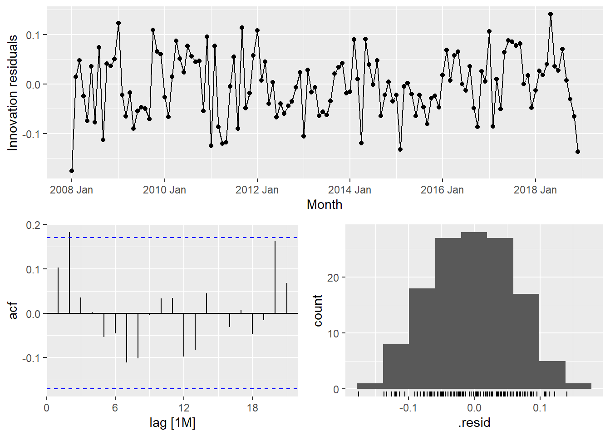
In the code chunk below, forecast() of fable package is used to forecast the future values. Then, autoplot() of feasts package is used to see the training data along with the forecast values.
fit_autoETS %>%
forecast(h = "12 months") %>%
autoplot(vietnam_train)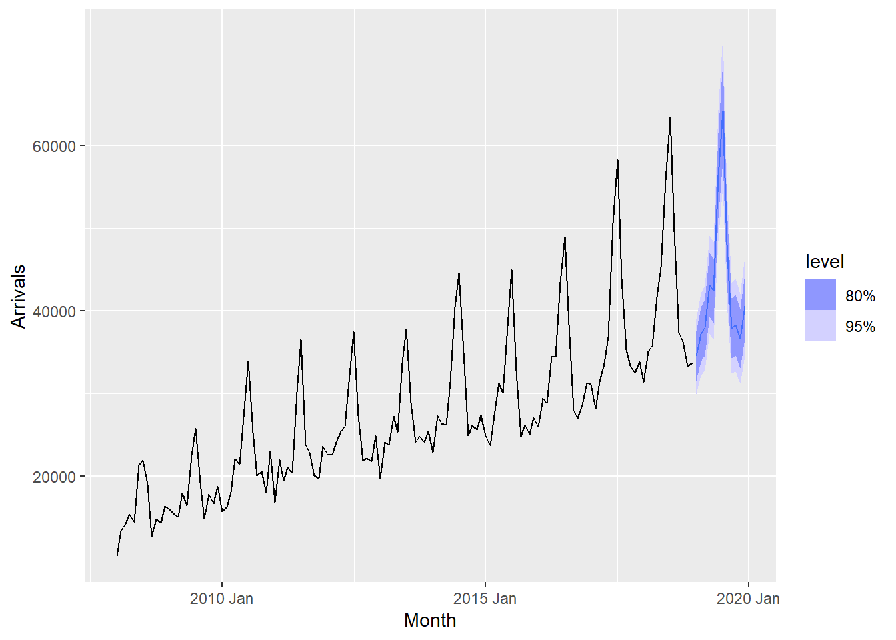
7.10. Visualising AutoETS model with ggplot2
There are time that we are interested to visualise relationship between training data and fit data and forecasted values versus the hold-out data..
fc_autoETS <- fit_autoETS %>%
forecast(h = "12 months")
vietnam_ts %>%
ggplot(aes(x=`Month`,
y=Arrivals)) +
autolayer(fc_autoETS,
alpha = 0.6) +
geom_line(aes(
color = Type),
alpha = 0.8) +
geom_line(aes(
y = .mean,
colour = "Forecast"),
data = fc_autoETS) +
geom_line(aes(
y = .fitted,
colour = "Fitted"),
data = augment(fit_autoETS))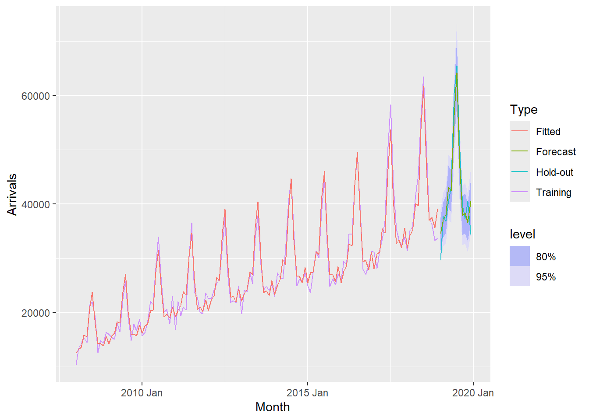
8. ARIMA - fable tidyverts
8.1. Visualising Autocorrelations
feasts package provides a very handy function for visualising ACF and PACF of a time series called gg_tsdiaply().
vietnam_train %>%
gg_tsdisplay(plot_type='partial')
tsibble_longer %>%
filter(`Country` == "Vietnam") %>%
ACF(Arrivals) %>%
autoplot()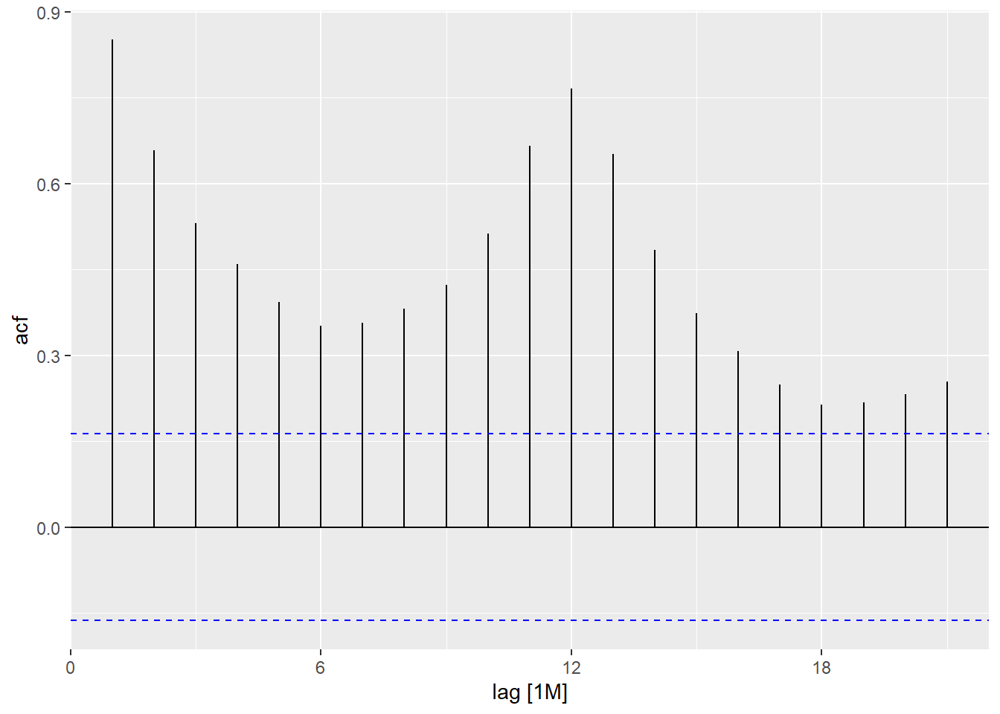
tsibble_longer %>%
filter(`Country` == "United Kingdom") %>%
ACF(Arrivals) %>%
autoplot()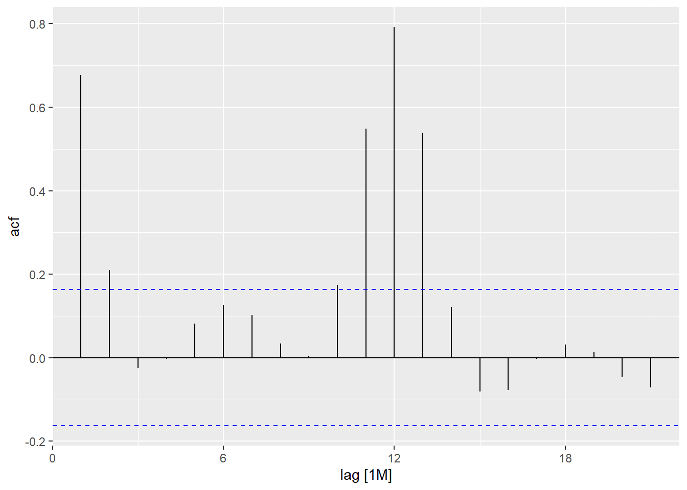
By comparing both ACF plots, it is clear that visitor arrivals from United Kingdom were very seasonal and relatively weaker trend as compare to visitor arrivals from Vietnam.
8.2. Differencing
8.2.1. Trend differencing
tsibble_longer %>%
filter(Country == "Vietnam") %>%
gg_tsdisplay(difference(
Arrivals,
lag = 1),
plot_type='partial')
lag=1 removed trend, leaving seasonality.
8.2.2. Seasonal differencing
tsibble_longer %>%
filter(Country == "Vietnam") %>%
gg_tsdisplay(difference(
Arrivals,
difference = 12),
plot_type='partial')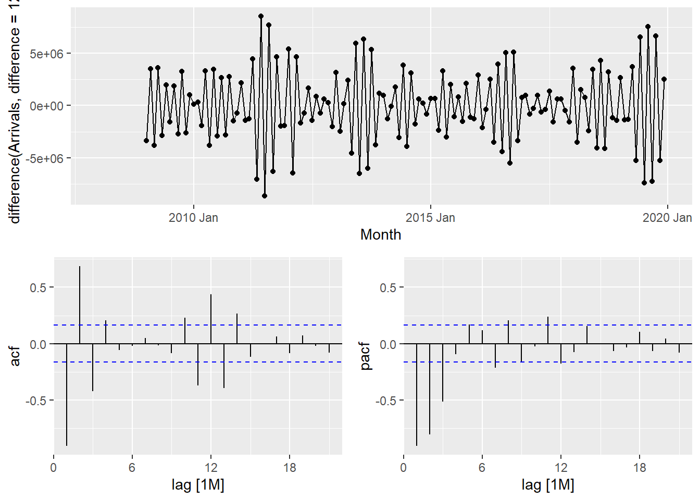
8.3. Fitting ARIMA
8.3.1. Manually
fit_arima <- vietnam_train %>%
model(
arima200 = ARIMA(Arrivals ~ pdq(2,0,0)),
sarima210 = ARIMA(Arrivals ~ pdq(2,0,0) +
PDQ(2,1,0))
)
report(fit_arima)# A tibble: 2 × 9
Country .model sigma2 log_lik AIC AICc BIC ar_roots ma_roots
<chr> <chr> <dbl> <dbl> <dbl> <dbl> <dbl> <list> <list>
1 Vietnam arima200 4173906. -1085. 2181. 2182. 2198. <cpl [26]> <cpl [0]>
2 Vietnam sarima210 4173906. -1085. 2181. 2182. 2198. <cpl [26]> <cpl [0]>8.3.2. Automatically
fit_autoARIMA <- vietnam_train %>%
model(ARIMA(Arrivals))
report(fit_autoARIMA)Series: Arrivals
Model: NULL model
NULL model8.3.3. Model comparison
bind_rows(
fit_autoARIMA %>% accuracy(),
fit_autoETS %>% accuracy(),
fit_autoARIMA %>%
forecast(h = 12) %>%
accuracy(vietnam_ts),
fit_autoETS %>%
forecast(h = 12) %>%
accuracy(vietnam_ts)) %>%
select(-ME, -MPE, -ACF1)# A tibble: 4 × 8
Country .model .type RMSE MAE MAPE MASE RMSSE
<chr> <chr> <chr> <dbl> <dbl> <dbl> <dbl> <dbl>
1 Vietnam ARIMA(Arrivals) Training NaN NaN NaN NaN NaN
2 Vietnam ETS(Arrivals) Training 1745. 1386. 5.29 0.467 0.473
3 Vietnam ARIMA(Arrivals) Test NaN NaN NaN NaN NaN
4 Vietnam ETS(Arrivals) Test 3163. 2636. 6.64 0.889 0.8578.4. Multiple Time Series
8.4.1. Forecast
In this section, we will perform time series forecasting on multiple time series at one goal. For the purpose of the hand-on exercise, visitor arrivals from five selected ASEAN countries will be used.
First, filter() is used to extract the selected countries’ data.
ASEAN <- tsibble_longer %>%
filter(Country == "Vietnam" |
Country == "Malaysia" |
Country == "Indonesia" |
Country == "Thailand" |
Country == "Philippines")Next, mutate() is used to create a new field called Type and populates their respective values. Lastly, filter() is used to extract the training data set and save it as a tsibble object called ASEAN_train.
ASEAN_train <- ASEAN %>%
mutate(Type = if_else(
`Month-Year` >= "2019-01-01",
"Hold-out", "Training")) %>%
filter(Type == "Training")8.4.2. Fitting
In the code chunk below auto ETS and ARIMA models are fitted by using model().
ASEAN_fit <- ASEAN_train %>%
model(
ets = ETS(Arrivals),
arima = ARIMA(Arrivals)
)8.4.3. Examining Models
The glance() of fabletools provides a one-row summary of each model, and commonly includes descriptions of the model’s fit such as the residual variance and information criteria.
ASEAN_fit %>%
glance()# A tibble: 5 × 10
Country .model sigma2 log_lik AIC AICc BIC MSE AMSE MAE
<chr> <chr> <dbl> <dbl> <dbl> <dbl> <dbl> <dbl> <dbl> <dbl>
1 Indonesia ets 0.0102 -1561. 3156. 3161. 3205. 173901516. 1.80e8 0.0732
2 Malaysia ets 0.00467 -1430. 2894. 2899. 2943. 20381756. 2.00e7 0.0506
3 Philippines ets 0.00356 -1343. 2722. 2728. 2774. 5282584. 7.58e6 0.0461
4 Thailand ets 0.00663 -1343. 2722. 2728. 2774. 5396141. 6.33e6 0.0584
5 Vietnam ets 0.00455 -1300. 2635. 2640. 2684. 3046059. 3.42e6 0.0520Reference: https://r4va.netlify.app/chap19#time-series-data-sampling